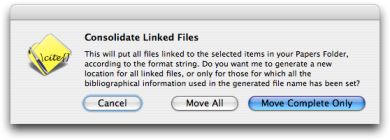
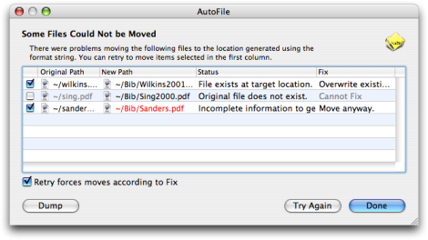

AutoFile Linked Files AutoFile Linked Files
AutoFile Linked Files AutoFile Linked FilesChoose this command to scan all selected publications in the file for linked files. A dialog will be opened that asks you for some options.
If you choose "Move All", all the linked files of selected items will be moved to the generated location, even if not all the fields necessary for the location are set.
If you choose "Move Complete Only", only the files for which all the fields necessary for generating the file name are set will be moved. Which fields are necessary to generate the location depends on the Local File format that is used.

If any files can not be moved or renamed for some reason, an error dialog will show you what the problems were.

You can choose to retry AutoFile. Select the items which you want to try again using the check boxes in the first column. Then press the "Try Again" button. If you check the button below the table, the retried moves will be forced as described in the Fix column. You can inspect the linked files or inspect the related publication items by double clicking in the table. You can also write a copy of the error information on the Desktop by hitting the "Dump" button.
Consolidating linked files is undoable, so feel free to experiment.
You can also AutoFile a single linked file by choosing the "AutoFile Paper" menu item in the action menu of the Editor.